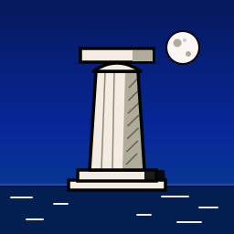

by Millwater Games
An atmospheric strategy game of the ancient Aegean, played on a globe you can hold. Found cities, take to the sea, win the favour of the gods and leave a legend behind.
Play alone against rival powers led by the computer, after a first voyage that teaches you the game. Or sail together with two to four friends: everyone moves at once each round, the computer leads the other powers, and games are found by a five-letter code or in a list of voyages open to all. Playing together uses Sign in with Google and Epic Online Services.
Thalassa is in development for Android phones and tablets.
The game has no analytics. It shows ads (Google AdMob) until you buy Remove ads, and with Google Play Games your achievements and saved games follow your Google account. Read the privacy policy to see what is shared, and when.